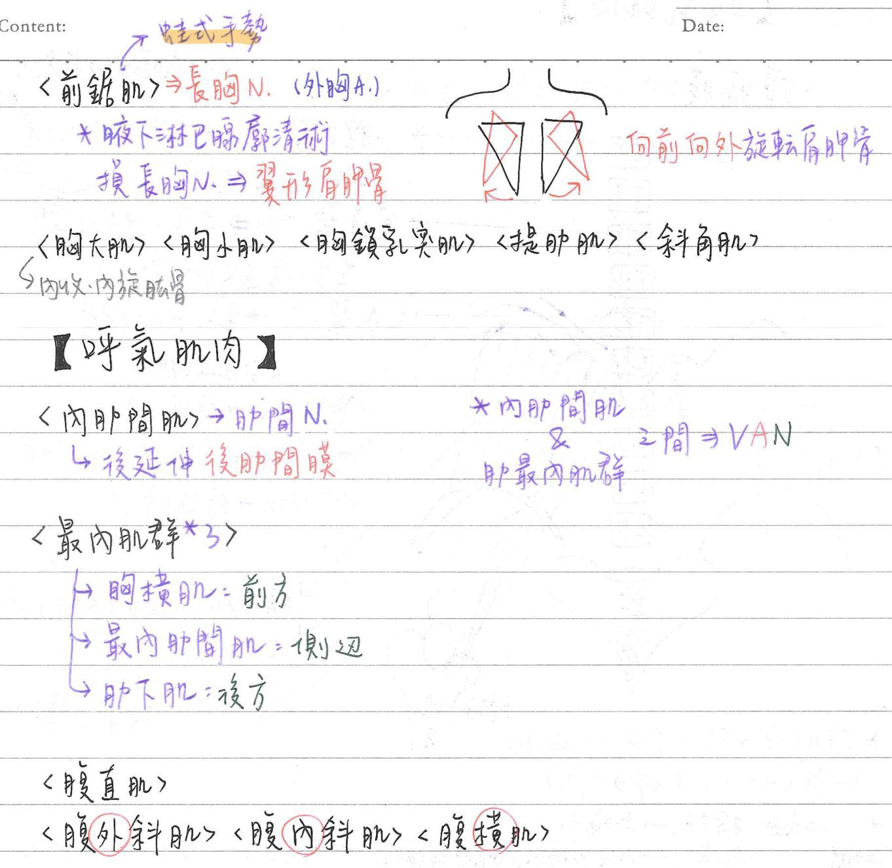
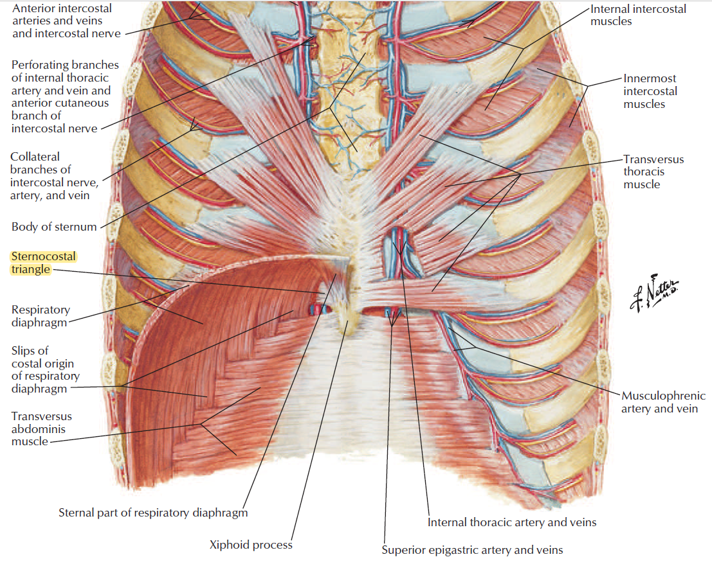
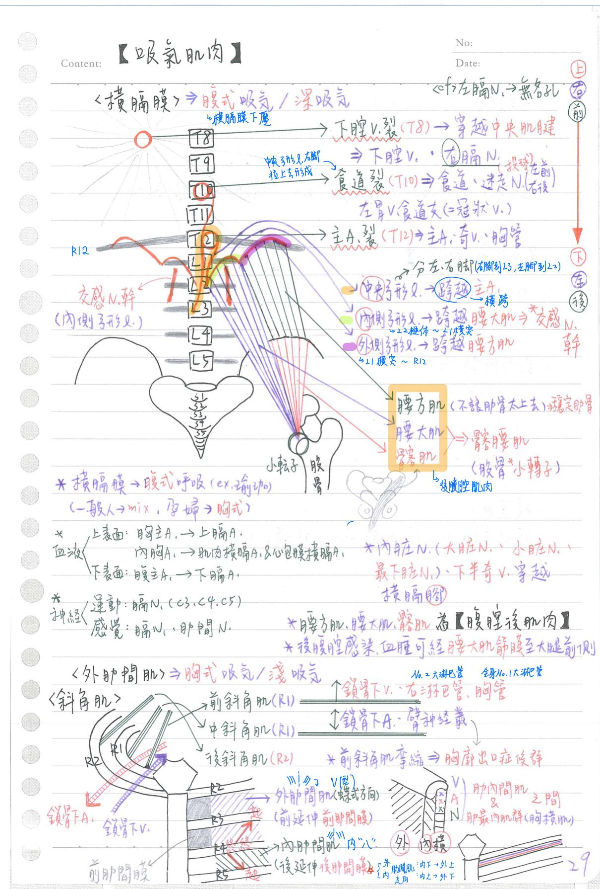
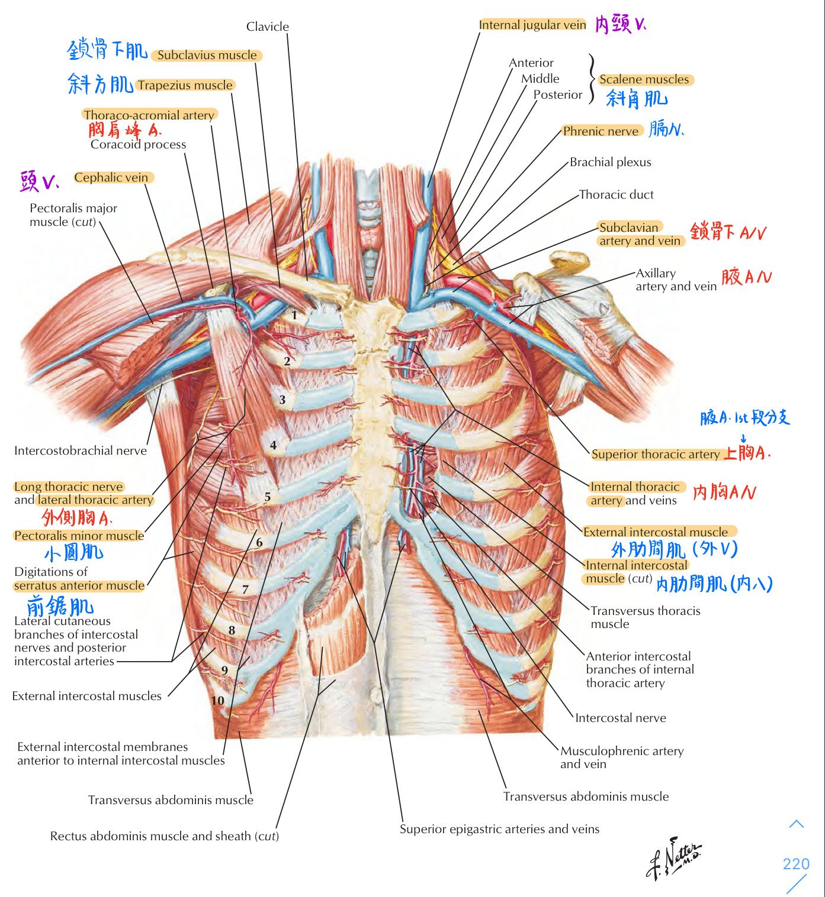

💪🏼 肌肉系統：吸氣肌肉&呼氣肌肉、橫膈膜3開口 [每年考！]
吸氣肌肉
| 肌肉名 | 起點-止點 | 血液供應 | 神經支配 | 運動 | 備註 |
|---|---|---|---|---|---|
| 橫膈膜(diaphragm) | 起：胸骨(劍突)、肋骨(R7-R12)、脊椎(L1-L3) 止：中央肌鍵 | 上表面：★上膈A(from 胸主A)、 肌肉橫膈A & 心包膜橫膈A(from 內胸A) 下表面：★下膈A(from 腹主A) | 運動：膈N(★C3-C5) 感覺：膈N、★肋間N | 參與腹式呼吸 | |
| 外肋間肌 (external intercostalis m.) | 肋骨(兩側纖維走向呈V字形，外上到內下) | 肋間N | 參與胸式呼吸 | ||
| 前鋸肌 (anterior serratus m.) | 起：★R1-R9外側 止：★肩胛骨內緣&下角 | ★★長胸N | ★肩胛骨前移(雙手向上、向前) ★★向前向外旋轉肩胛骨 ★上提肋骨→輔助吸氣 | ★★[107-2]翼形肩胛骨 | |
| 上後鋸肌 (superior posterior serratus m.) | 起：C7-T3棘突 止：R2-R5上緣 | 肋間N | 上舉肋骨(R2-R5) | ★起&止點都在中軸骨 | |
| 斜角肌(scalene m.) | ★前、中斜角肌止於R1 ★後斜角肌止於R2 | 臂神經叢、鎖骨下A由前、中斜角肌之間通過 前斜角肌前方：鎖骨下V、右淋巴管、胸管、迷走N、膈N 前斜角肌後方：鎖骨下A、臂神經叢 | 頸N | 胸廓出口症候群：前斜角肌痙攣 ⇒壓迫到鎖骨下A、臂神經叢 | |
| 胸大肌 | 起：鎖骨、★胸骨/肋骨、腹直肌鞘 止：肱骨結節間溝 | 內側胸N & 外側胸N | ★內收、內旋上臂(肱骨) | ||
| 胸小肌 | 起：肩胛骨喙狀突 止：★肋骨 | ★內側胸N | 上提肋骨 外旋肩胛骨 | ||
| 胸鎖乳突肌 | 副N(CN11) | ||||
| 提肋肌(levator costarum m.) | 位於背部 | 上提肋骨 |
呼氣肌肉
- 呼氣是一個被動過程，呼吸肌鬆弛時就開始進行呼氣，外肋間肌鬆弛使肋骨回縮
- ★[110-2]內肋間肌並不參與平靜呼氣
- 用力呼氣是一種主動過程：
- 促使內肋間肌收縮：減少前後徑
- 腹肌收縮：使橫膈膜往上突起縮小垂直徑
| 肌肉 | 起-止點 | 神經/血管支配 | 運動 | 備註 |
|---|---|---|---|---|
| 內肋間肌(internal intercostalis m.) | 肋骨(兩側纖維走向呈八字形,內上到外下) | 肋間N | 後方延伸為後肋間膜(posterior intercostal membrane) | |
| 最內肌群 胸橫肌(transversus thoracis m.) 最內肋間肌(innermost intercostalis m.) 肋下肌(subcostal m.) | 胸橫肌：前 最內肋間肌：中 肋下肌：後 | 位於內肋間肌&最內肌群之間 位於肋骨下緣 (由上到下排列：V.A.N.) 肋間V-肋間A-肋間N | 插胸管：吐氣時沿肋骨上緣進針(避免傷到神經血管) | |
| 下後鋸肌(inferior posterior serratus m.) | 起：T11-L3橫突 止：R9-R12下緣 | 肋間N | 下壓肋骨(R9-R12) | ★起&止點都在中軸骨 |
| 腹直肌 | ||||
| 腹外斜肌、腹內斜肌、腹橫肌 | 由外往內(依序) |
- <比較>上後鋸肌是上提肋骨(R2-R5)；下後鋸肌是下壓肋骨(R9-R12)
- 前腹壁由外往內是：腹外斜肌—>腹內斜肌—>腹橫肌；胸壁由外往內：外肋間肌、內肋間肌、胸橫肌(皆是外內橫)
- 翼形肩胛骨(wing scapula)：★[107-2]長胸N受損(EX：進行腋下淋巴廓清術)⇒當雙手向前時，肩胛骨下角向後外揚
- 胸廓出口症候群(thoracic outlet syndrome)：前斜角肌痙攣使前、中斜角肌之間隙太窄—>壓迫到臂神經叢、鎖骨下A
[重點]橫膈膜上面的東西
- 三個裂(hiatus)：
- 下腔靜脈裂孔 (★T8，偏前右)：★穿越中央肌鍵(central tendon，屬於筋膜(aponeurosis))
- 內容物：★[110-1]下腔V、★右膈N
- <cf>左膈N單獨穿越無名孔
- 食道裂孔(T10，居中)：穿越★★橫膈右腳(crura)形成的吊環
- 內容物：食道、★★迷走N(左前右後)、左胃A/V食道枝[左胃V=冠狀V](動靜脈皆有)
- (重點)註：左、右迷走N往下走時，會慢慢順時針旋轉(從上方看)，變成左前右後
- 主動脈裂孔(★T12，偏後左)：穿越★★[110-1]橫膈左、右腳(左右中央弓形韌帶)之間
- 內容物：主A、★★奇V、★★★★胸管
- 內臟N(大內臟N、小內臟N、最下內臟N)、下半奇V→穿越橫膈腳
- 下腔靜脈裂孔 (★T8，偏前右)：★穿越中央肌鍵(central tendon，屬於筋膜(aponeurosis))
- 二個孔(foramen)：(區段跟趙都沒上過)
- Bochdalek foramen=椎肋三角(vertebrocostal triangle)：後外側
- Morgagni foramen=胸肋裂(sternocostal hiatus)：前內側
- 先天性橫膈損傷：★90%位於後外側(Bochdalek)；5%位於前內側(Morgagni)
- 三條弓形韌帶(arcuate l.)
- 中央弓形韌帶：L3椎體-L2椎體；★[110-1]橫跨主A
- 內側弓形韌帶：L2椎體-L1橫突；橫跨★腰大肌；[重點]★★交感神經幹通過
- 外側弓形韌帶：L1橫突-R12；橫跨腰方肌；★肋下N穿過(支配前外側腹壁皮膚)

[110-1補充]胸肋三角(sternocostal triangle)
- 直覺想法：看英文大概能猜出是在胸骨&肋骨之間
- 位於橫膈與胸骨及肋骨的連結處之間
- 內容物：★[110-1]上腹壁A、肝臟膈⾯的淋巴管
- 題外話：內胸/內乳A行於★胸橫肌&肋軟骨之間




★[109-2]內頸A位於內頸V內側
好像有一次是考膈N&斜角肌相對位置
📖 書本補充：與筆記不同或筆記沒寫到的地方
⚠️
以下為對照書本後整理，筆記原文未更動。標「筆記 vs 書」的是兩邊寫法不同、建議回頭確認的地方。
胸部區的肌肉（p.147）
- 胸大肌：起於鎖骨、胸骨前表面、肋軟骨及腹外斜肌腱膜；止於肱骨結節間溝之外側唇；作用除了內收、內旋，書還列了屈曲上臂。
- 筆記 vs 書：胸小肌的起止點，筆記寫「起：喙狀突；止：肋骨」；書上剛好相反——近端（起點）＝肋骨的前表面，遠端（止點）＝肩胛骨的喙突，作用寫的是穩定肩胛骨。
- 前鋸肌：書寫起於胸壁外側、止於肩胛骨內側緣，作用是把肩胛骨往前貼到後胸壁；做不到時就形成翼狀肩胛（與筆記一致）。
後鋸肌（p.135）
- 書寫上、下後鋸肌都是起於椎骨的棘突、止於肋骨，肋間神經支配；上＝提起肋骨、下＝下壓肋骨。
- 筆記 vs 書：下後鋸肌起點，筆記寫「T11–L3 橫突」；書寫椎骨的棘突。
肋間肌（p.153）
- 外肋間肌：走向斜向前，前方為膜狀；內肋間肌：與外肋間肌交叉，後方為膜狀（筆記只寫了後肋間膜）。
- 肋下肌在後胸壁下面最多、跨越 1–2 根肋骨；肋間最內肌在胸壁外側最多；胸橫肌在前胸壁內面，附著第 3–6 根肋軟骨。
- 記憶法：肋下肌、肋間最內肌、胸橫肌是同一層（都在肋間內肌內層），由後往前＝SIT（Subcostalis, Innermost, Transverse）。
- 肋間的VAN 走在肋間內肌和最內層肌之間；腹壁的神經血管也類似，走在腹內斜肌和腹橫肌之間。
- 110-2-22 的解析：平靜呼吸時肋間內、外肌會收縮但不會造成肋骨運動，只有用力呼吸時才會（與筆記「內肋間肌不參與平靜呼氣」相符）。
- 肋間神經的分支：外側皮支在腋中線鑽出、前皮支在胸骨旁線鑽出、肌肉支支配肋間肌和後鋸肌（p.149）。
- 內胸動脈走在胸橫肌與肋軟骨之間（109-2-24，與筆記一致）。
斜角肌與膈神經（p.548–549、p.556）
- 前、中斜角肌附著第一肋骨，後斜角肌附著第二肋骨，所以能上提第二肋骨的是後斜角肌（107-1-18）。
- 膈神經：主要來自 C4（C3–C5）；走在深筋膜椎前層的深層、前斜角肌的前方、鎖骨下靜脈的後方、主支氣管的前方；支配橫膈運動及中央部的感覺、胸膜縱膈部與橫膈部、心包膜。
- 膈神經在總頸動脈的外側；臂神經叢在前、中斜角肌之間，所以膈神經走在臂神經叢的前面（103-1-6）。
橫膈（p.266–267）
- 裂孔高度與內容物（書）：
- 腔靜脈裂孔：前，T8 和 T9 之間；下腔靜脈＋右膈神經
- 食道裂孔：中，T10；食道＋迷走神經
- 主動脈裂孔：後，T12 下緣；主動脈＋胸管，奇或半奇靜脈（有時）
- 筆記 vs 書：腔靜脈裂孔筆記寫 T8，書寫「T8 和 T9 之間」；主動脈裂孔筆記沒列半奇靜脈（筆記寫半奇V穿越橫膈腳），書寫奇或半奇靜脈有時會走主動脈裂孔。
- 記憶法：迷走神經在胸腔時貼在食道兩側，所以和食道走同一個裂孔；胸管起自 L1–L2 椎骨前方，緊靠椎骨左側的主動脈，所以和主動脈走同一個裂孔。
- 橫膈腳：右腳附著 L3，形成食道裂孔（右腳纖維往上包住食道，所以食道在中線偏左）；左腳附著 L2，與右腳一起圍成主動脈裂孔。
- 動脈：上表面＝膈上A（胸主A）、心包膈A（胸內A）；筆記 vs 書：筆記把肌膈A 列在「上表面」，書把肌膈A（胸內A）列為側表面的供應；下表面＝膈下A（腹主A）。
- 神經：膈神經（C3–C5）負責所有運動、交感及大部分的感覺；下 6 或 7 條肋間神經及肋下神經負責橫膈周邊的感覺（筆記只寫肋間N，可補肋下N）。
- 弓狀韌帶（書只列兩條）：內側弓狀跨過腰大肌、外側弓狀跨過腰方肌。交感神經鏈經內側弓狀韌帶後方進入腹腔（104-2-16）。
- 胸肋三角：橫膈貼在胸骨和肋骨間的洞，有淋巴管通過（110-1-26 解析）。
📝 書中歷屆考題（點選答案作答）
101-2-23p.147
肩胛骨內緣背翻，無法貼近胸壁，此現象最可能肇因於下列何者之損傷？
105-2-12p.147
下列何者受損時，會影響前移 (protract) 肩胛骨 (scapula) 的功能？
💡 前鋸肌受傷時，無法將肩胛骨往前（前移）貼到後胸壁上。
107-2-30p.148
當患者出現翼狀肩胛骨 (winging of the scapula) 的症狀時，最常見的原因是由於那一條神經與其支配的肌肉受損所引發？
102-2-15p.148
下列何者受損時會影響肱骨 (humerus) 的內收 (adduct)、內旋 (medially rotate) 及屈曲 (flex) 的功能？
💡 (B)(C)(D) 都沒有附著到肱骨。
105-2-11p.148
下列何者的起點及終點，都在中軸骨骼上？
💡 胸大肌、胸小肌、前鋸肌的終點分別在肱骨、肩胛骨喙突及內側緣（肩胛骨屬附肢骨）；後鋸肌由椎骨到肋骨，都是中軸骨。
110-2-22p.153
有關肋間肌群的敘述，下列何者錯誤？
💡 平靜呼吸時肋間內外肌會收縮，但不會造成肋骨運動；只有強力呼氣或吸氣時才會。
113-1-17p.154
高位胸椎脊髓損傷病患，在受傷初期肺活量 (vital capacity) 大幅下降的主要原因為：
💡 只有肋間肌的神經有部分來自高位胸椎脊髓；橫膈是 C3–C5；腹肌的神經部分來自低位胸椎脊髓。
109-2-24p.151
內胸動脈 (internal thoracic artery) 走在：
💡 內胸動脈走在胸骨兩側（肋軟骨與胸骨相接處），在胸橫肌的前面。
109-2-26p.152
有關肋間隙 (intercostal space) 之敘述，下列何者正確？
💡 第 5 肋間在第 5、6 肋骨之間；長胸神經走在前鋸肌表面，不鑽入肋間；肋間神經走在肋間內肌和最內層肋間肌之間。
107-1-18p.549
下列哪一肌肉收縮，可上提第二肋骨 (second rib)？
💡 前、中斜角肌附著在第一根肋骨，後斜角肌附著在第二根肋骨。
105-1-15p.557
膈神經 (phrenic nerve) 起自哪個脊髓段位？
103-1-6p.558
有關膈神經 (phrenic nerve) 頸根處相關位置的敘述，何者正確？
💡 膈神經走在總頸動脈外側及前斜角肌前面；臂神經叢在前、中斜角肌之間，所以膈神經在臂神經叢前面。
102-1-13p.268、p.558
刺激橫膈中央處的壁層胸膜 (parietal pleura) 所引起的牽涉痛 (referred pain)，其對應的皮區 (dermatome) 為：
💡 橫膈中央的感覺由膈神經（C3–C5）負責。（書中 p.268 與 p.558 重複收錄此題）
100-2-17p.268
橫膈 (diaphragm) 上相對於第十胸椎的裂口是下列何結構？
108-2-5p.268
迷走神經由下列何處進入腹腔？
106-1-21p.268
有關構造與橫膈開口的對應，下列何者正確？
💡 交感神經幹經由內側弓狀韌帶通過橫膈。
111-1-19p.268
下列何者經由橫膈 (diaphragm) 的主動脈裂孔 (aortic hiatus)，穿通胸腔與腹腔？
112-2-18p.268
下列何者穿過橫膈 (diaphragm) 的中央肌腱 (central tendon)？
109-1-8p.268
膈下動脈 (inferior phrenic artery) 源自：
104-2-16p.269
交感神經鏈 (sympathetic chain) 由橫膈 (diaphragm) 的下列何處進入腹腔？
💡 交感神經鏈非常靠近脊柱，不走橫膈上的裂孔或外側弓狀韌帶，而是經內側弓狀韌帶後方進入腹腔。
107-2-8p.269
橫膈的右腳 (right crus of the diaphragm) 圍繞著下列那一個構造？
💡 右腳往上的纖維會包住食道，所以食道位在中線偏左。
111-2-18p.269
下膈動脈 (inferior phrenic artery) 是下列何者的分支？
110-1-26p.269
有關橫膈 (diaphragm) 的敘述，下列何者錯誤？
💡 胸肋三角是橫膈貼在胸骨和肋骨間的洞，有淋巴管通過。